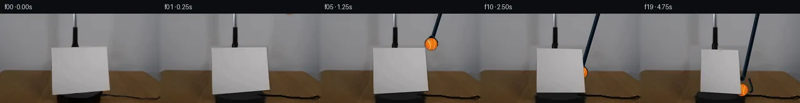
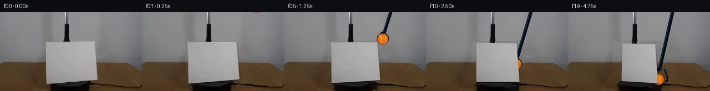
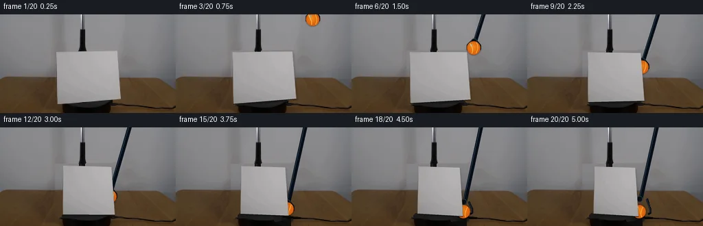
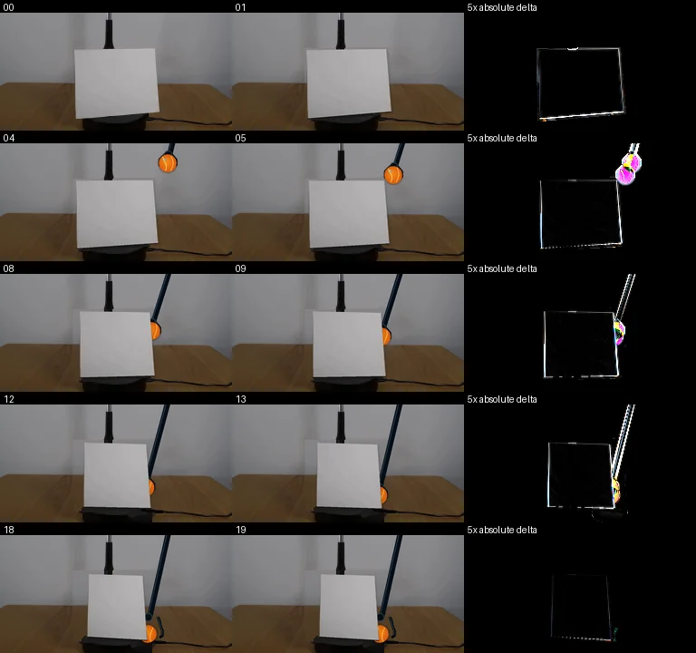

初版 V0
![]()
Observable Generation Trace
把最终像素视频、Harness 冻结的每轮候选、真实工具事件和 Agent 自述放在同一页。可观测证据与模型自述分开标记，避免把“模型说它检查过”误当成真实工具调用。
![首帧]()
Static locked-off single-shot with fixed frame throughout filmed with constant framerate in real-time. The scene shows a realistic scientific demonstration. The scene only contains the described setup and actions. The blue-black grabber tool held the tennis ball above the cardstock and lowered it behind the cardstock. The cardstock sits on the black platform on top of a wooden table. The blue-black grabber tool places the orange tennis ball behind the clockwise-rotating cardstock on the table.
首帧显示在左侧播放器初始画面。Track 权限、隔离和 tensor 一致性来自 run manifest，而不是 METHOD.md。
上方并排显示初版和最终版，默认同步播放；下方每个版本可独立播放，也可勾选加入同步播放。仅检查图更新的连续重复快照已合并，回退旧视频仍保留为一次修订。
Observable events
来源：events.jsonl + run manifest
此 Track 禁止读取输出图片。逐轮预览由外部 Harness 自动冻结，只用于事后审计，生成 Agent 当时看不到这些页面。
Frozen candidates
每张图来自该 round 的真实 00 / 01 / 05 / 10 / 19 帧

pixels 5b9c7711923ff7cc · code 2c22f4ef2ef4de03
--- previous/generate.py +++ current/generate.py @@ -0,0 +1,276 @@ +#!/usr/bin/env python3 +"""Generate a 20-frame pixel animation from the supplied first frame. + +All new imagery is made with local pixel operations: sampled reconstruction, +perspective warping, analytic gradients, vector shapes, and alpha compositing. +""" + +from pathlib import Path +import math + +import cv2 +import numpy as np +from PIL import Image, ImageDraw, ImageFilter + +from artifact_io import save + + +ROOT = Path(__file__).resolve().parent +W, H = 256, 144 +S = 4 +SRC_QUAD = np.float32([[82, 55], [170, 54], [176, 123], [83, 131]]) + + +def smoothstep(x): + x = np.clip(x, 0.0, 1.0) + return x * x * (3.0 - 2.0 * x) + + +def reconstruct_clean_plate(src): + """Replace the original card with locally sampled wall/table pixels.""" + plate = src.astype(np.float32).copy() + yy, xx = np.mgrid[0:H, 0:W] + card_mask = np.zeros((H, W), np.uint8) + cv2.fillPoly(card_mask, [np.int32([[79, 51], [173, 51], [180, 126], + [86, 135], [79, 131]])], 255) + + # Row-wise reconstruction preserves the source scene's gentle illumination. + synth = plate.copy() + rng = np.random.default_rng(1427) + for y in range(50, 136): + if y < 92: + left = src[y, 28:76].astype(np.float32) + right = src[y, 184:232].astype(np.float32) + lm, rm = np.median(left, axis=0), np.median(right, axis=0) + for x in range(76, 184): + q = (x - 76) / 108.0 + base = lm * (1-q) + rm * q + texture = left[(x * 7 + y * 3) % len(left)] - left.mean(axis=0) + synth[y, x] = base + 0.16 * texture + else: + # Sample genuine table grain from both unobscured sides. + lrow = src[y, 5:76].astype(np.float32) + rrow = src[y, 183:252].astype(np.float32) + lm, rm = np.mean(lrow, axis=0), np.mean(rrow, axis=0) + for x in range(76, 184): + q = (x - 76) / 108.0 + base = lm * (1-q) + rm * q + strip = lrow if ((x + y) & 1) == 0 else rrow + texture = strip[(x * 5 + y * 11) % len(strip)] - strip.mean(axis=0) + synth[y, x] = base + 0.28 * texture + # Very low-amplitude sensor-like variation prevents a synthetic flat patch. + synth += rng.normal(0, 0.22, synth.shape[:2])[:, :, None] + synth = np.clip(synth, 0, 255) + alpha = cv2.GaussianBlur(card_mask, (0, 0), 1.4).astype(np.float32) / 255.0 + plate = plate * (1-alpha[:, :, None]) + synth * alpha[:, :, None] + + # Hidden portion of the central matte-black apparatus stem. + cv2.rectangle(plate, (115, 49), (123, 126), (15, 15, 15), -1) + cv2.rectangle(plate, (116, 49), (118, 126), (30, 30, 31), -1) + + # Reconstruct the symmetrical black turntable top and front skirt. + cv2.ellipse(plate, (128, 134), (42, 10), 0, 0, 360, (37, 35, 33), -1) + cv2.rectangle(plate, (89, 132), (167, 143), (18, 17, 16), -1) + cv2.ellipse(plate, (128, 142), (39, 8), 0, 0, 360, (13, 13, 12), -1) + cv2.ellipse(plate, (128, 129), (38, 9), 0, 0, 360, (28, 27, 26), -1) + cv2.ellipse(plate, (126, 126), (31, 4), 0, 180, 356, (47, 45, 43), 1, + lineType=cv2.LINE_AA) + + # Restore the visible cable leaving the platform toward frame right. + cord = np.array([[156, 130], [175, 132], [192, 132], [210, 135], + [238, 136], [252, 133], [255, 134]], np.int32) + cv2.polylines(plate, [cord], False, (8, 7, 7), 2, cv2.LINE_AA) + return np.uint8(np.clip(plate, 0, 255)) + + +def target_quad(frame): + """Perspective silhouette of a vertical card yawing clockwise.""" … diff truncated; 189 more lines …

pixels 226989a4c13b6ef7 · code 32fe28ad2f2a0082
--- previous/generate.py
+++ current/generate.py
@@ -265,7 +265,20 @@
card_rgb, card_alpha = make_card_layer(src_hi, quad)
composite_card(scene, card_rgb, card_alpha, quad)
out = scene.convert('RGB').resize((W, H), Image.Resampling.LANCZOS)
- frames.append(np.array(out, dtype=np.uint8))
+ out = np.array(out, dtype=np.uint8)
+ # Lock every untouched source pixel. Upsample/downsample filtering is
+ # confined to a dilated union of the actual moving silhouettes.
+ active = np.zeros((H, W), np.uint8)
+ cv2.fillConvexPoly(active, np.round(SRC_QUAD).astype(np.int32), 255)
+ cv2.fillConvexPoly(active, np.round(quad).astype(np.int32), 255)
+ cv2.line(active, (197, 0), (int(pos[0]), int(pos[1]-7)), 255, 18,
+ cv2.LINE_AA)
+ cv2.circle(active, (int(pos[0]), int(pos[1])), 14, 255, -1,
+ cv2.LINE_AA)
+ cv2.ellipse(active, (int(pos[0]), 133), (17, 8), 0, 0, 360, 255, -1)
+ active = cv2.dilate(active, np.ones((5, 5), np.uint8), iterations=1)
+ out[active == 0] = src[active == 0]
+ frames.append(out)
frames = np.stack(frames)
assert np.array_equal(frames[0], src)
save(frames, ROOT)pixels 226989a4c13b6ef7 · code 32fe28ad2f2a0082
No generate.py text change in this frozen round.
pixels 6d253e0c6f902373 · code 2c4ada0329fd7494
--- previous/generate.py
+++ current/generate.py
@@ -275,7 +275,8 @@
cv2.LINE_AA)
cv2.circle(active, (int(pos[0]), int(pos[1])), 14, 255, -1,
cv2.LINE_AA)
- cv2.ellipse(active, (int(pos[0]), 133), (17, 8), 0, 0, 360, 255, -1)
+ if pos[1] > 101:
+ cv2.ellipse(active, (int(pos[0]), 133), (17, 8), 0, 0, 360, 255, -1)
active = cv2.dilate(active, np.ones((5, 5), np.uint8), iterations=1)
out[active == 0] = src[active == 0]
frames.append(out)pixels 6d253e0c6f902373 · code 2c4ada0329fd7494
No generate.py text change in this frozen round.
Final visual checks
Harness 保存的最终产物


Agent claims
以下文字由生成 Agent 撰写，不等同于工具证据
The animation is generated entirely by generate.py from first_frame.png, using NumPy, Pillow, and OpenCV pixel operations. No external images, masks, models, engines, or network resources are used.
artifact_io.save writes pixels.npz, all numbered PNG frames, inspection.png, and the standalone index.html player. generate.py separately writes transition_check.png, containing selected before/after pairs and 5x absolute-difference maps.
Verification is numeric/local-code only, as requested. Checks include exact frame-00 identity, PNG-to-packed-tensor equality, shape/dtype/count, nonempty temporal deltas, monotonic card-width change, orange-region trajectory/occlusion, and final ball-centroid stability. No generated or later output was opened with an image Read/View tool, so no claim of visual review is made.